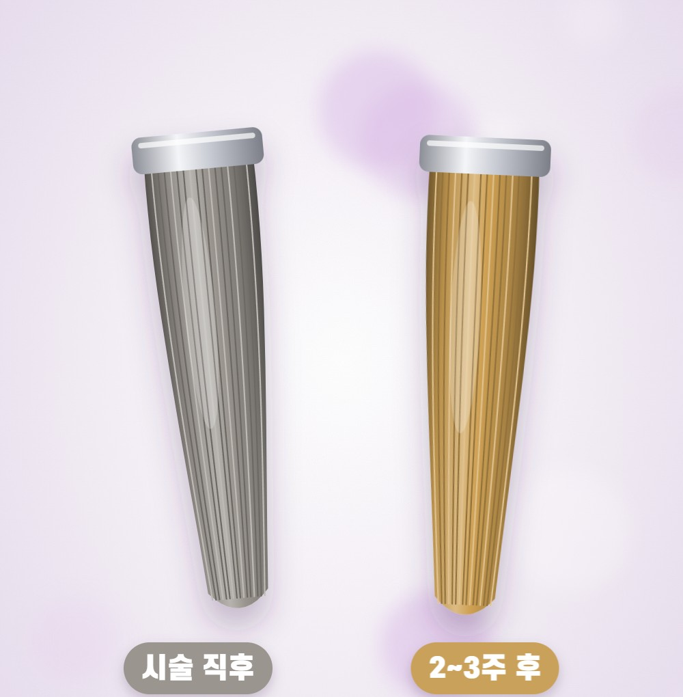
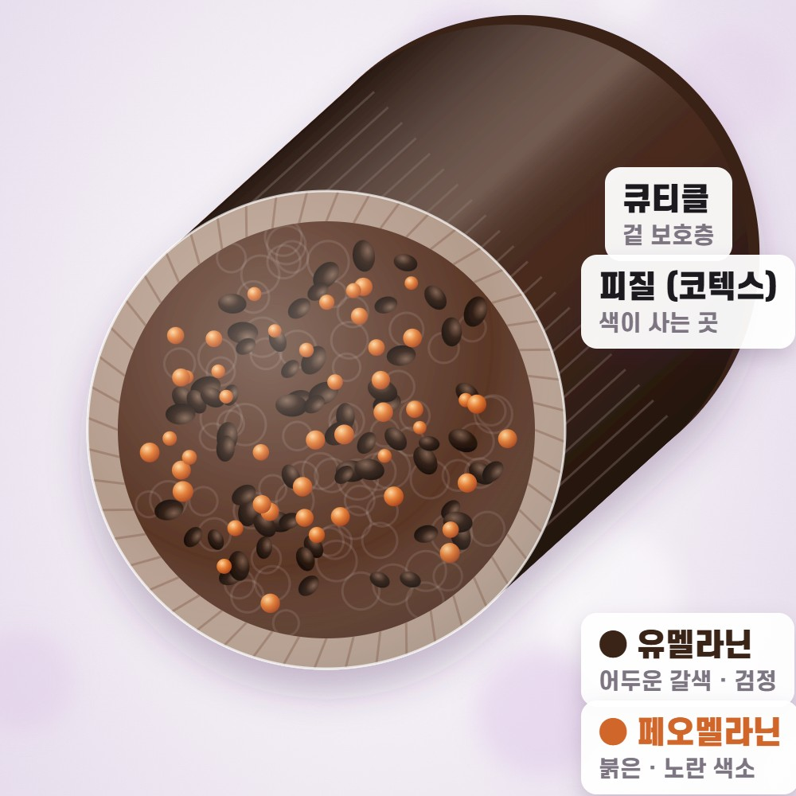
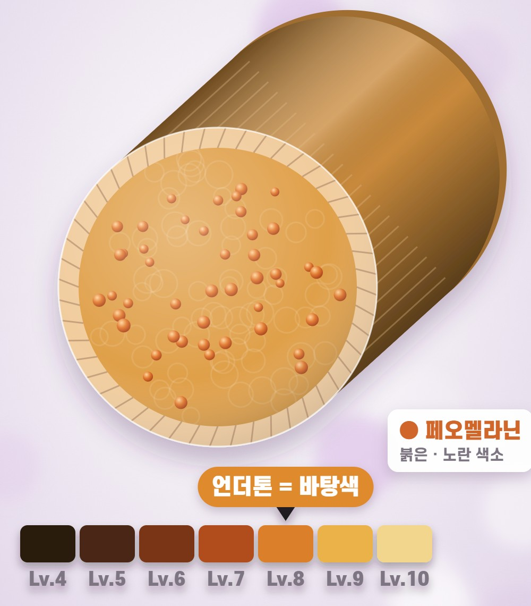
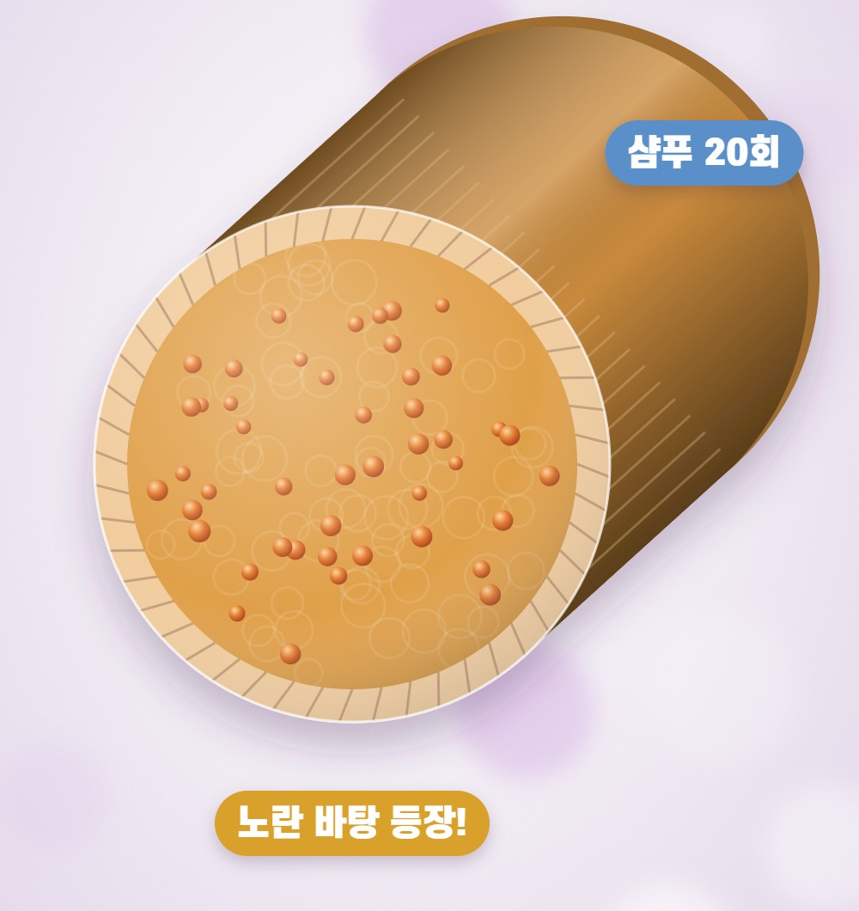
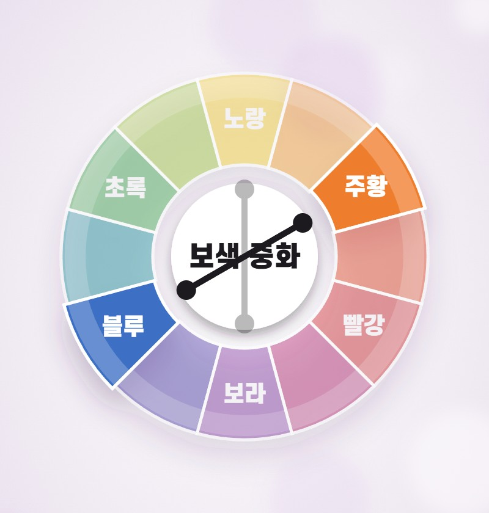

ASH COLOR GUIDE
애쉬가 2~3주 만에 노래진다면
이 원리를 알면 달라집니다
25년 현장 경험으로 정리한 애쉬 컬러 오래 유지하는 법


25년 현장 경험으로 정리한 애쉬 컬러 오래 유지하는 법

약이 나빠서가 아니라 모발 속 바탕색(언더톤) 때문인 경우가 대부분입니다.
이런 분께 특히 도움이 됩니다
이 세 장면만 이해하면 애쉬가 노래지는 이유가 보입니다.


탈색을 하면 유멜라닌이 먼저 깨지고 페오멜라닌이 남습니다. 그래서 밝아질수록 바탕색이 빨강 → 주황 → 노랑 순서로 보여요. 이 남아 있는 색이 바로 언더톤, 바탕색입니다.

애쉬는 따뜻한 바탕색을 차가운 색소로 덮어 중화한 상태입니다. 샴푸를 반복하면 이 차가운 색소가 먼저 빠져나가고, 숨어 있던 노란 바탕이 올라옵니다. 손상모일수록 색이 머무르지 못해 더 빨리 빠집니다.
올라온 색의 반대색(보색)을 더하면 색이 중화되어 차분해집니다.

| 노란기 | 밝은 탈색모(레벨 9~10)에 주로 보여요 → 보라로 중화 |
| 주황기 | 중간 밝기(레벨 7~8)에 주로 보여요 → 블루로 중화 |
| 붉은기 | 어두운 밝기(레벨 5~6)에 주로 보여요 → 그린(매트)으로 중화 |
※ 레벨은 대략적인 기준이에요. 정확한 바탕색은 담당 디자이너에게 확인하세요.
미용실과 집에서 각각 이것만 챙기세요.
💜 보랏빛이 남았다면?
보색 샴푸를 오래 두면 보랏빛이 돌 수 있어요. 일반 샴푸로 한두 번 감으면 자연스럽게 빠집니다.
애쉬가 노래지는 건 실패가 아니라
바탕색이 드러나는 자연스러운 과정입니다.
내 바탕색에 맞는 보색과 순한 관리,
이 두 가지만 기억하세요.
더 자세한 상담이 필요하시다면